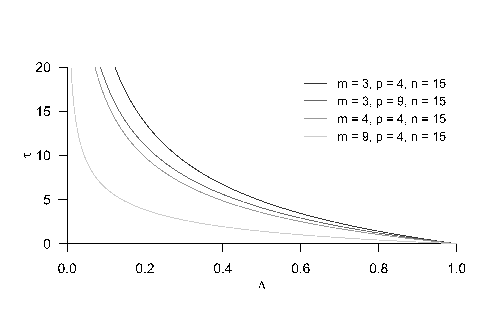
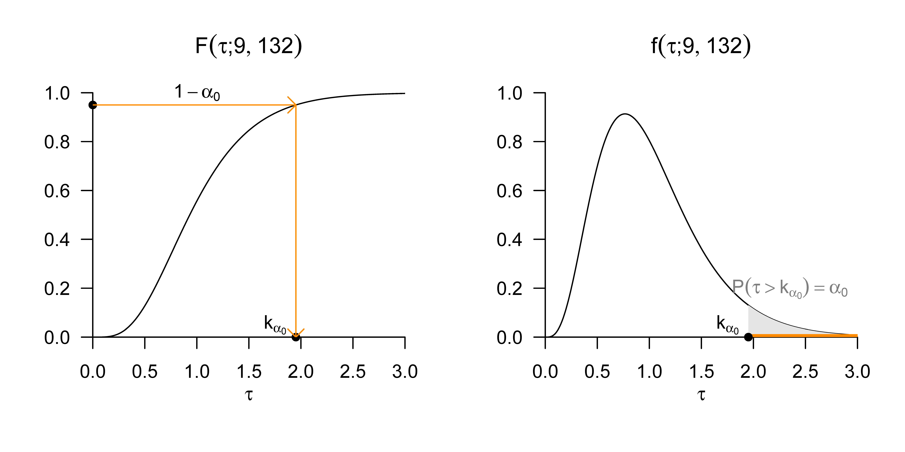

| COND | dBDI | dGLU |
|---|---|---|
| F2F | 11 | 4.3 |
| F2F | 10 | 3.9 |
| F2F | 12 | 3.5 |
| F2F | 7 | 2.6 |
| F2F | 10 | 3.3 |
| F2F | 12 | 3.5 |
| F2F | 9 | 3.1 |
| F2F | 9 | 3.6 |
| F2F | 9 | 5.6 |
| F2F | 11 | 3.6 |
| F2F | 7 | 3.4 |
| F2F | 9 | 4.0 |
| F2F | 11 | 5.6 |
| F2F | 14 | 5.3 |
| F2F | 8 | 3.2 |
| ONL | 6 | 3.1 |
| ONL | 8 | 2.7 |
| ONL | 7 | 2.1 |
| ONL | 8 | 3.1 |
| ONL | 11 | 2.8 |
| ONL | 9 | 2.8 |
| ONL | 9 | 3.7 |
| ONL | 8 | 2.7 |
| ONL | 6 | 3.6 |
| ONL | 7 | 1.4 |
| ONL | 9 | 1.3 |
| ONL | 8 | 3.4 |
| ONL | 7 | 3.7 |
| ONL | 7 | 2.3 |
| ONL | 9 | 3.4 |
| WLC | -2 | 0.7 |
| WLC | 2 | 1.4 |
| WLC | 1 | 1.0 |
| WLC | 2 | 0.9 |
| WLC | 3 | 1.6 |
| WLC | 2 | 1.6 |
| WLC | 5 | 1.1 |
| WLC | -1 | -0.2 |
| WLC | 2 | 2.5 |
| WLC | -2 | 0.4 |
| WLC | 1 | 0.7 |
| WLC | 3 | -0.1 |
| WLC | 1 | 1.3 |
| WLC | 4 | 0.6 |
| WLC | 4 | 0.7 |
38 Einfaktorielle Varianzanalyse
38.1 Anwendungsszenario
Das Anwendungsszenario einer einfaktoriellen multivariaten Varianzanalyse ist durch das Vorliegen von multivariaten Datenpunkten von zwei oder mehr Gruppen randomisierter experimenteller Einheiten gekennzeichnet, die sich hinsichtlich der Level eines experimentellen Faktors unterscheiden. Ist die Anzahl an Datenpunkten in jeder Gruppe gleich, so spricht von einem balancierten einfaktoriellen multivariaten Varianzanalysedesign. Von den Datenpunkten der iten Gruppe bzw. des iten Faktorlevels wird angenommen, dass sie Realisierungen von jeweils \(n_i\) unabhängigen und identisch multivariat normalverteilten Zufallsvektoren sind, deren wahre, aber unbekannte, Erwartungswertparameter sich potentiell über die Gruppen hinweg unterscheiden und deren wahrer, aber unbekannter, Kovarianzmatrixparameter über die Gruppen hinweg identisch ist. In diesen Grundannahmen handelt es beim Anwendungsszenario der einfaktoriellen multivariaten Varianzanalyse also um die Generalisierung des Einstichproben-T\(^2\)-Test Szenarios zu zwei oder mehr Gruppen experimenteller Einheiten. Grundlegend wird voraussgesetzt, dass ein Interesse am einem inferentiellen Vergleich, der wahren, aber unbekannten, faktorlevelspezifischen Erwartungswertparameter besteht.
Anwendungsbeispiel
Als konkretes Anwendungsbeispiel betrachten wir die Anlayse von Prä-Post-Interventions-BDI-Score und Prä-Post-Interventions-Glukokortikoidplasmalevel Differenzenwerten von drei Gruppen von jeweils 15 Patienti:innen, die unterschiedliche Psychotherapiesettings (Face-to-face und Online) bzw. eine Wartelistenkontrollbedingung durchlaufen haben. Wir stellen dazu in Tabelle 38.1 einen simulierten Beispieldatensatz dar. Die erste Spalte von Tabelle 38.1 (COND) listet das spezifische Therapiesetting (F2F: Face-to-face, ONL: online, WLC: waitlist control) der Patient:innen auf. Die zweite Spalte (dBDI) listet die entsprechenden BDI-Score-Differenzwerte und die dritte Spalte (dGLU) die entsprechenden Glukokortikoidplasmalevel-Differenzwerte auf. In beiden Fällen zeigen positive Werte eine Abnahme der Depressionssymptomatik, negative Werte dagegen einer Zunahme der Depressionssymptomatik an. Abbildung 38.1 visualisiert diesen Datensatz sowie die gruppenspezifischen Stichprobenmittel und Stichprobenkovarianzen als Normalverteilungsisokonturen.
Folgender R Code demonstriert die Auswertung gruppenspezifischer Deskriptivstatistiken für diesen Datensatz.
# Studiengruppenspezifische Deskriptivstatistiken
D = read.csv("./_data/503-einfaktorielle-varianzanalyse.csv") # Dateneinlesen
m = 2 # Datendimension von Interesse
p = 3 # Anzahl Gruppen
k = 15 # Anzahl Datenpunkte pro Gruppe
Y = array(dim = c(m,k,p)) # Datenarrayinitialisierung
Y[,,1] = rbind(D$dBDI[D$COND == "F2F"], # F2F dBDI Werte
D$dGLU[D$COND == "F2F"]) # F2F dGLU Werte
Y[,,2] = rbind(D$dBDI[D$COND == "ONL"], # ONL dBDI Werte
D$dGLU[D$COND == "ONL"]) # ONL dGLU Werte
Y[,,3] = rbind(D$dBDI[D$COND == "WLC"], # WLC dBDI Werte
D$dGLU[D$COND == "WLC"]) # WLC dGLU Werte
y_bar_i = array(dim = c(m,p)) # Stichprobenmittelarray
C_i = array(dim = c(m,m,p)) # Stichprobenkovarianzmatrizenarray
j_k = matrix(rep(1,k), nrow = k) # 1_{l}
I_k = diag(k) # Einheitsmatrix I_l
J_k = matrix(rep(1,k^2), nrow = k) # 1_{ll}
for (i in 1:p){ # Gruppeniterationen
y_bar_i[,i] = (1/k)*(Y[,,i] %*% j_k) # Stichprobenmittel \bar{\upsilon}_i
C_i[,,i] = (1/(k-1))*(Y[,,i] %*% (I_k-(1/k)*J_k) %*% t(Y[,,i]))} # Stichprobenkovarianzmatrix C_i
dBDI, dGLU Daten des Beispieldatensatzes. Jeder Punkt visualisiert die Daten einer Patient:in. Die Stichprobenkovarianz ist durch die 0.7 Isokontur einer zweidimensionalen Normalverteilung mit Erwartungswertparameter und Kovarianzmatrixparameter entsprechend dem Stichprobenmittel und der Stichprobenkovarianz der jeweiligen Gruppe dargestellt.
38.2 Modellformulierung und Modellschätzung
Wir definieren das Modell einfaktoriellen multivariaten Varianzanalyse wie folgt.
Definition 38.1 (Modell der einfaktoriellen multivariaten Varianzanalyse) Für \(i = 1,...,p\) und \(j = 1,...,n_i\) seien \(\upsilon_{ij}\) \(m\)-dimensionale Zufallsvektoren, die die \(n := \sum_{i=1}^p n_i\) \(m\)-dimensionalen Datenpunkte eines einfaktoriellen multivariaten Varianzanalyseszenarios modellieren. Dann hat das Modell der einfaktoriellen multivariaten Varianzanalyse die strukturelle Form \[\begin{equation} \upsilon_{ij} = \mu_i + \varepsilon_{ij} \mbox{ mit } \varepsilon_{ij} \sim N(0_m,\Sigma) \mbox{ u.i.v. } \mbox{ mit } \mu_i \in \mathbb{R}^m \mbox{ und } \Sigma \in \mathbb{R}^{m \times m} \mbox{ pd } \end{equation}\] und die Datenverteilungsform \[\begin{equation} \upsilon_{ij} \sim N(\mu_i,\Sigma) \mbox{ u.v. mit } \mu_i \in \mathbb{R}^m \mbox{ und } \Sigma \in \mathbb{R}^{m \times m} \mbox{ pd}. \end{equation}\]
In Definition 38.1 bezeichnet \(n_i\) die Anzahl der Zufallsvektoren \(\upsilon_{ij}\) der \(i\)ten von \(p\) Gruppen experimenteller Einheiten. Im Falle eines balancierten Designs gilt offenbar \(n_1 = \cdots = n_p\). In diesem Fall setzen wir der Einfachheit halber \(k := n_i\) für \(i = 1,...,p\). In diesem Fall gilt für die Gesamtanzahl an Zufallsvektoren dann \(n = pk\). Die Äquivalenz von struktureller Form und Datenverteilungsform der einfaktoriellen multivariaten Varianzanalyse ergibt sich mit Theorem 20.4 durch Transformation der \(\varepsilon_{ij}\) unter Multiplikation mit der Einheitsmatrix und unter Addition der jeweiligen gruppenspezifischen Erwartungswertparameter. Die wahren, aber unbekannten, Parameter \(\mu_i, i = 1,...,p\) und \(\Sigma\) des einfaktoriellen multivariaten Varianzanalysemodells können anhand der in folgendem Theorem definierten Schätzer geschätzt werden.
Theorem 38.1 (Parameterschätzer der einfaktoriellen multivariaten Varianzanalyse) Gegeben sei das Modell der einfaktoriellen multivariaten Varianzanalyse. Dann ist für \(i = 1,...,p\) \[\begin{equation} \hat{\mu}_i := \frac{1}{n_i}\sum_{j = 1}^{n_i} \upsilon_{ij} \end{equation}\] ein unverzerrte Schätzer des gruppenspezifischen Erwartungswertparameters \(\mu_i\) und \[\begin{equation} \hat{\Sigma} := \frac{1}{n-p}\sum_{i = 1}^p \sum_{j = 1}^{n_i} \left(\upsilon_{ij} - \hat{\mu}_i\right)\left(\upsilon_{ij} - \hat{\mu}_i\right)^T \end{equation}\] ein unverzerrter Schätzer des Kovarianzmatrixparameters \(\Sigma\).
In Theorem 38.1 ist \(\hat{\mu}_i\) offenbar das Stichprobenmittel der Zufallsvektoren der \(i\)ten Gruppe. \(\hat{\Sigma}\) ist die gruppenunspezifische Stichprobenkovarianzmatrix aller Zufallsvektoren und entspricht der mit \(1/(n-p)\) skalierten Within-Group Sum-of-Squares Matrix, die wir in Theorem 38.2 einführen werden. Folgender R demonstriert die Evaluation der Parameterschätzer mithilfe einer R Funktion.
estimate = function(Y){
# Diese Funktion evaluiert die Parameterschätzer einer einfaktoriellen
# multivariaten Varianzanalyse basierend auf einen m x k x p Datensatz Y.
#
# Input
# Y : m x k x p Datenarray
#
# Output
# $mu_hat : m x p \mu_i Parameterschätzer
# $Sigma_hat : m x m \Sigma Parametschätzer
# ---------------------------------------------------------------------------
# Dimensionsparameter
d = dim(Y) # Datensatzdimensionen
m = d[1] # Datendimension
k = d[2] # Anzahl Datenpunkte pro Gruppe
p = d[3] # Anzahl Gruppen
# Erwartungswertparameterschätzer
mu_hat_i = matrix(apply(Y,3,rowMeans), nrow = m)
# Kovarianzmatrixparameterschätzer
Sigma_hat = matrix(rep(0,m*m), nrow = m)
for(i in 1:p){
for(j in 1:k){
Sigma_hat = Sigma_hat + (1/(k*p-p))*(Y[,j,i] - mu_hat_i[,i]) %*% t(Y[,j,i] - mu_hat_i[,i])
}
}
# Outputspezifikation
return(list(mu_hat_i = mu_hat_i, Sigma_hat = Sigma_hat))}Anstelle eines Beweises validieren wir die Aussage von Theorem 38.1 beispielhaft mithilfe folgender R Simulation, in der wir die Erwartungswerte der Schätzer durch ihre Stichprobenmittelwerte über Datensatzrealisierungen hinweg approximieren.
# Modellparameter
library(MASS) # multivariate Normalverteilungen
p = 3 # Anzahl Gruppen
k = 15 # Anzahl Datenpunkte pro Gruppe
m = 2 # Datendimension
mu_i = matrix(c(1,2,2,1,3,2.5), ncol = p) # Erwartungswertparameter
Sigma = matrix(c(1,.5,.5,1) , ncol = m) # Kovarianzmatrixparameter
# Simulationsparameter und Arrays
nsm = 1e2 # Anzahl Simulation
mu_hat_is = array(dim = c(m,p,nsm)) # \hat{\mu}_i Array
Sigma_hats = array(dim = c(m,m,nsm)) # \hat{\Sigma} Array
# Simulationen
for(s in 1:nsm){
# Datengeneration
Y = array(dim = c(m,k,p)) # Datenarray
for(i in 1:p){
Y[,,i] = t(mvrnorm(k,mu_i[,i],Sigma)) # Datengeneration
}
S = estimate(Y) # Parameterschätzung
mu_hat_is[,,s] = S$mu_hat_i # \hat{\mu}_i
Sigma_hats[,,s] = S$Sigma_hat # \hat{\Sigma}
}
# Schätzererwartungswertschätzung
E_hat_mu_i_hat = apply(mu_hat_is , c(1,2), mean)
E_hat_Sigma_hat = apply(Sigma_hats, c(1,2), mean)Wie in Abbildung 38.2 ergibt sich hier auch schon bei einem recht geringen Simulationsaufwand von 100 Datensatzrealisierungen eine gute Korrespondenz zwischen wahren, aber unbekannten, Parameterwerten \(\mu_i, i = 1,...,p\) und \(\Sigma\) und den approximierten Erwartungswertparametern \(\mathbb{E}(\hat{\mu}_i)\) für \(i = 1,...,p\) und \(\mathbb{E}(\hat{\Sigma})\).

Die Anwendung der Parameterschätzung auf die Daten des Beispieldatensatzes in Tabelle 38.1 ergibt folgende Resultate.
[,1] [,2] [,3]
[1,] 9.933333 7.933333 1.6666667
[2,] 3.900525 2.803179 0.9594878 [,1] [,2]
[1,] 3.3142857 0.4022937
[2,] 0.4022937 0.638133638.3 Modellevaluation
Primäres Ziel einer einfaktoriellen multifaktoriellen Varianzanalyse ist meist das Testen der Nullhypothese \[\begin{equation} H_0 : \mu_1 = \cdots = \mu_p. \end{equation}\] Diese Nullhypothese besagt, dass keine Unterschiede zwischen den wahren, aber unbekannten, Erwartungswertparametern der Stichprobengruppen bestehen. Die Alternativhypothese lautet somit \[\begin{align} \begin{split} H_1 : \mu_{i_l} \neq \mu_{j_l} & \mbox{ für mindestens ein Paar } i,j \mbox{ mit } i \neq j, 1 \le i,j \le p \\ & \mbox{ und mindestens ein } l \mbox{ mit } 1 \le l \le m. \end{split} \end{align}\] Die Alternativhypothese besagt also, dass sich mindestens zwei wahre, aber unbekannten, Erwartungswertparameter in mindestens einer ihrer Komponenten unterscheiden. Wie aus dem Kontext der univariaten einfaktorielle Varianzanalyse bekannt impliziert das Ablehnen der Nullhypothese auch hier keine Aussage über die genaue Form des inferierten Erwartungswertparameterunterschiedes.
Im Rahmen einfaktoriellen multivariaten Varianzanalyse können Tests der Nullhypothese mit verschiedenen Teststatistiken konstruiert werden. Diesen Teststatistiken ist gemein, dass sie auf eine Generalisierung der aus dem univariaten Fall bekannten Quadratsummenzerlegung der einfaktoriellen Varianzanalyse zurückgehen. Wir führen im nächsten Abschnitt zunächst diese sogenannte Kreuzproduktsummenmatrizenzerlegung der einfaktoriellen multivariaten Varianzanalyse ein. Nachfolgend betrachten wir dann die Modellevaluation mithilfe der Wilks’-\(\Lambda\)-Statistik.
Kreuzproduktsummenmatrizenzerlegung
Folgendes Theorem generalisiert die Quadratsummenzerlegung der einfaktoriellen Varianzanalyse auf das multivariate Anwendungsszenario.
Theorem 38.2 (Kreuzproduktsummenmatrizenzerlegung)
Gegeben sei das Modell der einfaktoriellen multivariaten Varianzanalyse. Weiterhin seien \[\begin{equation} \bar{\upsilon} := \frac{1}{n}\sum_{i = 1}^p \sum_{j = 1}^{n_i} \upsilon_{ij} \mbox{ und } \bar{\upsilon}_i := \frac{1}{n_i} \sum_{j = 1}^{n_i} \upsilon_{ij} \end{equation}\] das und das , respektive. Schließlich seienDann gilt \[\begin{equation} T = B + W. \end{equation}\]
Beweis. Es gilt \[\begin{align} \begin{split} T & = \sum_{i=1}^p \sum_{j=1}^{n_i}(\upsilon_{ij}-\bar{\upsilon})(\upsilon_{ij}-\bar{\upsilon})^T \\ & = \sum_{i=1}^p \sum_{j=1}^{n_i} (\upsilon_{ij}-\bar{\upsilon}_i+\bar{\upsilon}_i-\bar{\upsilon})(\upsilon_{ij}-\bar{\upsilon}_i+\bar{\upsilon}_i-\bar{\upsilon})^T \\ & = \sum_{i=1}^p \sum_{j=1}^{n_i} \left((\upsilon_{ij}-\bar{\upsilon}_i)+(\bar{\upsilon}_i-\bar{\upsilon})\right)\left((\upsilon_{ij}-\bar{\upsilon}_i)+(\bar{\upsilon}_i-\bar{\upsilon})\right)^T \\ & = \sum_{i=1}^p \sum_{j=1}^{n_i} \left( (\upsilon_{ij}-\bar{\upsilon}_i)(\upsilon_{ij}-\bar{\upsilon}_i)^T +2(\upsilon_{ij}-\bar{\upsilon}_i)(\bar{\upsilon}_i-\bar{\upsilon})^T + (\bar{\upsilon}_i-\bar{\upsilon})(\bar{\upsilon}_i-\bar{\upsilon})^T \right) \\ & = \sum_{i=1}^p \left( \sum_{j=1}^{n_i} (\upsilon_{ij}-\bar{\upsilon}_i)(\upsilon_{ij}-\bar{\upsilon}_i)^T +\sum_{j=1}^{n_i}2(\upsilon_{ij}-\bar{\upsilon}_i)(\bar{\upsilon}_i-\bar{\upsilon})^T +\sum_{j=1}^{n_i}(\bar{\upsilon}_i-\bar{\upsilon})(\bar{\upsilon}_i-\bar{\upsilon})^T \right) \\ & = \sum_{i=1}^p \left( \sum_{j=1}^{n_i} (\upsilon_{ij}-\bar{\upsilon}_i)(\upsilon_{ij}-\bar{\upsilon}_i)^T +2\left(\sum_{j=1}^{n_i}(\upsilon_{ij}-\bar{\upsilon}_i)\right)(\bar{\upsilon}_i-\bar{\upsilon})^T +n_i(\bar{\upsilon}_i-\bar{\upsilon})(\bar{\upsilon}_i-\bar{\upsilon})^T \right) \\ & = \sum_{i=1}^p \left( \sum_{j=1}^{n_i} (\upsilon_{ij}-\bar{\upsilon}_i)(\upsilon_{ij}-\bar{\upsilon}_i)^T +2\left(\sum_{j=1}^{n_i}\left(\upsilon_{ij}-\frac{1}{n_i}\sum_{j=1}^{n_i} \upsilon_{ij}\right)\right)(\bar{\upsilon}_i-\bar{\upsilon})^T +n_i(\bar{\upsilon}_i-\bar{\upsilon})(\bar{\upsilon}_i-\bar{\upsilon})^T \right) \\ & = \sum_{i=1}^p \left( \sum_{j=1}^{n_i} (\upsilon_{ij}-\bar{\upsilon}_i)(\upsilon_{ij}-\bar{\upsilon}_i)^T +2\left(\sum_{j=1}^{n_i} \upsilon_{ij}-\sum_{j=1}^{n_i} \upsilon_{ij}\right) (\bar{\upsilon}_i-\bar{\upsilon})^T +n_i(\bar{\upsilon}_i-\bar{\upsilon})(\bar{\upsilon}_i-\bar{\upsilon})^T \right) \\ & = \sum_{i=1}^p \left( \sum_{j=1}^{n_i} (\upsilon_{ij}-\bar{\upsilon}_i)(\upsilon_{ij}-\bar{\upsilon}_i)^T +n_i(\bar{\upsilon}_i-\bar{\upsilon})(\bar{\upsilon}_i-\bar{\upsilon})^T \right) \\ & = \sum_{i=1}^p n_i(\bar{\upsilon}_i-\bar{\upsilon})(\bar{\upsilon}_i-\bar{\upsilon})^T +\sum_{i=1}^p \sum_{j=1}^{n_i} (\upsilon_{ij}-\bar{\upsilon}_i)(\upsilon_{ij}-\bar{\upsilon}_i)^T \\ & = B + W. \end{split} \end{align}\]
Die intuitive Interpretation der Totalen, Between-Group, und Within-Group Sum-of-Squares Matrizen ist analog zu den aus dem univariaten Szenario bekannten Begriffen: Die Matrix \(T\) repräsentiert die totale Variabilität der Datenvektoren um das Gesamtstichprobenmittel, die Matrix \(B\) repräsentiert die Variabilität der Gruppenstichprobenmittel um das Gesamtstichprobenmittel und die Matrix \(W\) repräsentiert die Variabilität der Datenvektoren um ihre jeweiligen Gruppenstichprobenmittel. Wie im univariaten Fall wird auch hier also die Gesamtdatenvariabilität additiv in zwei unabhängige Beiträge zerlegt. Dabei kann die Matrix \(W\) auch als Maß für die Residualvariabiliät verstanden werden, weil sie die verbleibende Variabilität nach Schätzung der Gruppenerwartungswertparameter quantifiziert. Offenbar gilt für den Schätzer \(\hat{\Sigma}\) des gemeinsamen Stichprobenkovarianzmatrixparameters aus Theorem 38.1 \[\begin{equation} W = (n - p)\hat{\Sigma}. \end{equation}\] Folgender R demonstriert die Evaluation der in Theorem 38.2 definierten Matrizen mithilfe einer R Funktion.
sos = function(Y){
# Diese Funktion evaluiert die Kreuzproduktsummenmatrizen T,B,W einer
# einfaktoriellen Varianzanalyse basierend auf einen m x k x p Datensatz Y.
#
# Input
# Y : m x k x p Datenarray
#
# Output
# $y_bar : m x 1 Gesamtmittelwert
# $y_bar_i : m x p Gruppenmittelwerte
# $T : m x m Total Sum of Squares Matrix
# $B : m x m Between-Group Sum-of-Squares Matrix
# $W : m x m Within Group Sum of Squares Matrix
# ---------------------------------------------------------------------------
d = dim(Y) # Datensatzdimensionen
m = d[1] # Datendimension
k = d[2] # Anzahl Datenpunkte pro Gruppe
p = d[3] # Anzahl Gruppen
# Mittelwerte
y_bar_i = matrix(apply(Y,3,rowMeans), nrow = m) # Gruppenstichprobenmittel
y_bar = matrix(rowMeans(y_bar_i) , nrow = m) # Gesamtstichprobenmittel
# Totale Sum-of-Squares Matrix
T = matrix(rep(0,m*m), nrow = m)
for(i in 1:p){
for(j in 1:k){
T = T + (Y[,j,i] - y_bar) %*% t(Y[,j,i] - y_bar)}}
# Between Sum of Squares Matrix
B = matrix(rep(0,m*m), nrow = m)
for(i in 1:p){
B = B + k*(y_bar_i[,i] - y_bar) %*% t(y_bar_i[,i] - y_bar)}
# Within Sum of Squares Matrix
W = matrix(rep(0,m*m), nrow = m)
for(i in 1:p){
for(j in 1:k){
W = W + (Y[,j,i] - y_bar_i[,i]) %*% t(Y[,j,i] - y_bar_i[,i])}}
# Outputspezifikation
return(list(y_bar_i = y_bar_i, y_bar = y_bar, T = T, B = B, W = W))}Modellevaluation mit der Wilks’-\(\Lambda\)-Statistik
Basierend auf der Kreuzproduktsummenmatrizenzerlegung in Theorem 38.2 wurde eine Reihe von Teststatisken für die einfaktorielle multivariate Varianzanalyse vorgeschlagen (Wilks (1932), Pillai (1955), Roy & Bose (1953), Hotelling (1951)). Wir betrachten hier exemplarisch lediglich die Wilks’-\(\Lambda\)-Statistik nach Wilks (1932). Im Gegensatz zur \(F\)-Teststatistik der univariaten einfaktoriellen Varianzanalyse sind die Frequentistischen Verteilungen von der Wilks’-\(\Lambda\)-Statistik bei Zutreffen der Nullhypothese nur für bestimmte Anwendungsszenarien, insbesondere bei kleinen Werte der Datendimension \(m\) und der Gruppenanzahl \(p\), analytisch exakt zu bestimmen. In diesen Szenarien ist man auf \(f\)-Verteilungen mit \(m\)- und \(p\)-abhängigen Freiheitsgradparametern geführt. Für Anwendungsszenarien mit größeren Werten von \(m\) und/oder \(p\) existieren lediglich Approximationen der Frequentistischen Verteilungen der Wilks’-\(\Lambda\)-Statistik, die nur asymptotisch für unendlich große Stichprobenumfänge \(n \to \infty\) exakt sind. Auch diese Approximationen sind wiederum durch \(f\)-Verteilungen mit \(m\)- und \(p\)-abhängigen Freiheitsgradparametern gegeben. In der Anwendung unterscheiden sich Testentscheidungen basierend auf exakten oder approximativen Verteilungen der verschiedenen Teststatistiken meist nicht. Zur Absicherung dieser Aussage mögen im konkreten Fall von Datendimension und Gruppengröße Simulationen helfen, mögliche Unterschiede zwischen der Wilks’-\(\Lambda\)-Statistik und anderen Teststatistiken sowie der Approximation ihrer Verteilungen abzuschätzen.
Wir definieren zunächst die Wilks’-\(\Lambda\)-Statistik.
Definition 38.2 (Wilks’-\(\Lambda\)-Statistik) Gegeben sei das Modell der einfaktoriellen multivariaten Varianzanalyse sowie die Between-Group Sum-of-Squares Matrix \(B\) und die Within-Group Sum-of-Squares Matrix \(W\). Dann ist Wilks’-\(\Lambda\)-Statistik definiert als \[\begin{equation} \Lambda := \frac{|W|}{|T|} = \frac{|W|}{|B+W|}. \end{equation}\]
Intuitiv misst \(\Lambda\) das Verhältnis von Residualdatenvariabilität, repräsentiert durch die Determinante von \(W\), und Gesamtdatenvariabilität, repräsentiert durch die Determinante von \(T = B+W\). \(\Lambda\) ist damit also analog zum Effektstärkenmaß \(\eta^2\) der univariaten einfaktoriellen Varianzanalyse definiert. Im Falle der Gleichheit der gruppenspezifischen Stichprobenmittel gilt für \(\Lambda\) insbesondere \[\begin{equation} \bar{\upsilon}_1 = \cdots = \bar{\upsilon}_p = \bar{\upsilon} \Rightarrow B = 0_{mm} \Rightarrow \Lambda = \frac{|W|}{|T|} = \frac{|W|}{|B+W|} = \frac{|W|}{|0_{mm} + W|} = \frac{|W|}{|W|} = 1. \end{equation}\] Für ansteigende Unterschiede zwischen den gruppenspezifischen Stichprobenmittel \(\bar{\upsilon}_i\) nimmt \(|B+W|\) gegenüber \(|W|\) zu und \(\Lambda\) somit ab. Ohne Beweis wollen wir dabei festhalten, dass \(0 \le \Lambda \le 1\). Im Gegensatz zu den meisten bekannten Teststatistiken sprechen hier also kleine Werte der Teststatistik \(\Lambda\) für eine Abweichung von der Nullhypothese.
Äquivalent kann \(\Lambda\) auch in Form der Eigenwerte der Matrix \(W^{-1}B\) angegeben werden. Dabei ist die Matrix \(W^{-1}B\) das multivariate Analogon zum dem aus der univariaten einfaktoriellen Varianzanalyse bekanntem Verhältnis von Between-Group Sum-of-Squares und Within-Group Sum-of-Squares, welches die Grundlage für \(F\)-Teststatitik im univariaten Fall bildet. Es gilt folgendes Theorem.
Theorem 38.3 (Eigenwertform von der Wilks’-\(\Lambda\)-Statistik) Es seien das Modell der einfaktoriellen multivariaten Varianzanalyse, die Between-Group Sum-of-Squares Matrix \(B\), die Within-Group Sum-of-Squares Matrix \(W\) und die Wilks’-\(\Lambda\)-Statistik definiert wie oben. Weiterhin seien \(\lambda_1,...,\lambda_s\) die Eigenwerte von \(W^{-1}B\). Dann gilt \[\begin{equation} \Lambda = \prod_{i=1}^s \frac{1}{1 + \lambda_i}. \end{equation}\]
Wir verzichten auf einen Beweis.
Für spezielle, durch die Datendimension \(m\) und die Gruppenanzahl \(p\) charakterisierte Anwendungsszenarien stellt Wilks (1932) analytische Formen für die Verteilungen von Transformationen von \(\Lambda\) unter der Nullhypothese bereit. Dabei entsprechen diese analytischen Formen den Verteilungen von \(f\)-Zufallsvariablen mit bestimmten, durch die Datendimension und Gruppenanzahl des Anwendungsszenario vorgegebenen Freiheitsgradparametern. Wir fassen die Anwendungsszenarien, die betreffende Transformation von \(\Lambda\) und die analytischen Formen ihrer Frequentistischen Verteilungen bei Zutreffen der Nullhypothese in folgendem Theorem zusammen.
Theorem 38.4 (Spezielle \(H_0\) Verteilungen von Transformationen der Wilks’-\(\Lambda\)-Statistik)
Es seien das Modell der einfaktoriellen Varianzanalyse und die Wilks’-\(\Lambda\)-Statistik definiert wie oben und es gelte außerdem die Nullhypothese \[\begin{equation} H_0 : \mu_1 = \cdots = \mu_p. \end{equation}\] Dann sind für die in den ersten beiden Tabellenspalten aufgeführten Spezialfällen die in der dritten Tabellenspalte aufgeführten Statistiken \(f\)-Zufallsvariablen und zwar mit den in der vierten Tabellenspalte aufgeführten Freiheitsgradparametern.In Abbildung 38.3 visualisieren wir exemplarische simulationsbasierte Validierungen der in Theorem 38.4 angegebenen Verteilungen.

Rao (1951) hat für allgemeine Anwendungsszenarien die in folgendem Theorem angegebenen Approximationen von Verteilungen von Transformationen der Wilks’-\(Lambda\)-Statistik vorgeschlagen. Man beachte, dass sich die in diesem Theorem definierte Teststatistik \(\tau\) wie in Abbildung 38.4 gezeigt zu \(\Lambda\) reziprok verhält. Geringe Werte von \(\Lambda\) als Evidenz gegen die Nullhypothese entsprechen also hohen Werten von \(\tau\).
Theorem 38.5 (Approximative \(H_0\) Verteilungen von Transformationen der Wilks’-\(\Lambda\)-Statistik) Es seien das Modell der einfaktoriellen Varianzanalyse und die Wilks’-\(\Lambda\)-Statistik definiert wie oben und es gelte außerdem die Nullhypothese \[\begin{equation} H_0 : \mu_1 = \cdots = \mu_p. \end{equation}\] Dann ist die Statistik \[\begin{equation} \tau := \frac{1 - \Lambda^{1/t}}{\Lambda^{1/t}} \frac{\nu_2}{\nu_1} \end{equation}\] mit \[\begin{equation} \nu_1 := m(p-1) \mbox{ und } \nu_2 := wt-\frac{1}{2}(m(p-1)-2) \end{equation}\] sowie \[\begin{equation} w := n-1-\frac{1}{2}(m+p) \mbox{ und } t := \sqrt{\frac{m^2(p-1)^2 - 4}{m^2 + (p-1)^2 - 5}} \end{equation}\] approximativ \(f\)-verteilt mit Freiheitsgradparametern \(\nu_1\) und \(\nu_2\).

In Abbildung 38.5 visualisieren wir exemplarische simulationsbasierte Validierungen der in Theorem 38.5 angegebenen Verteilungen.

Mithilfe der von Rao (1951) bestimmten approximativen Verteilungen der transformierten Wilks’-\(\Lambda\)-Statistik \(\tau\) bei Zutreffen der Nullhypothese können wir nun einen Hypothesentest für die einfaktorielle multivariate Varianzanalyse angeben.
Theorem 38.6 (Wilks’-\(\Lambda\)-basierter Test, Testumfangkontrolle, p-Wert) Gegeben seien Modell der einfaktoriellen multivariaten Varianzanalyse und die transfomierte Wilks’-\(\Lambda\)-Statistik \(\tau\) mit Verteilungsparametern \(\nu_1,\nu_2\) wie oben definiert. Weiterhin sei für \(\Upsilon = (\upsilon_1,...,\upsilon_n)\) der kritische Wert-basierte Test \[\begin{equation} \phi(\Upsilon) := 1_{\{\tau > k\}} := \begin{cases} 1 & \tau > k \\ 0 & \tau \le k \end{cases} \end{equation}\] definiert. Dann ist \(\phi\) genau dann ein Level-\(\alpha_0\)-Test mit Testumfang \(\alpha\), wenn \[\begin{equation} k := k_{\alpha_0} := F^{-1}(1-\alpha_0; \nu_1,\nu_2) \end{equation}\] ist und der p-Wert einer realisiertern \(\tau\)-Teststatistik \(\tilde{\tau}\) ergibt sich zu \[\begin{equation} \mbox{p-Wert} = \mathbb{P}(\tau \ge \tilde{\tau}) = 1 - F(\tilde{\tau}; \nu_1,\nu_2) \end{equation}\]
Wir verzichten auf einen Beweis von Theorem 38.6, welcher analog zu den entsprechenden Beweisen zum Beispiel beim Einstichproben-T\(^2\)-Test geführt werden kann. Die in Theorem 38.6 implizite Wahl eines kritischen Wertes zur Testumfangkontrolle im Anwendungsszenario \(m := 3, p := 4\) und \(n_i = 15\) für \(i = 1,..,p\) und damit \(\nu_1 = 9\) und \(\nu_2 = 132\) bei einem Signifikanzlevel von \(\alpha_0 = 0.05\) visualisieren wir in Abbildung 38.6.

Praktisches Vorgehen
In der Praxis entsprechen obige Ergebnisse dann folgendem Vorgehen bei der Durchführung einer einfaktoriellen multivariaten Varianzanalyse: Man unterstellt, dass ein vorliegender Datensatz von \(i = 1,...,p\) Gruppen von \(m\)-dimensionalen Datenvektoren für jeweils \(j = 1,...,n_i\) eine Realisation von Zufallsvektoren \(\upsilon_{ij} \sim N(\mu_i,\Sigma)\) mit unbekannten, gruppenspezifischen Erwartungswertparametern \(\mu_i \in \mathbb{R}^m\) und gruppenunspezifischem Kovarianzmatrixparameter \(\Sigma \in \mathbb{R}^{m \times m} \mbox{ pd}\) ist. Man möchte entscheiden, ob eher die Nullhypothese \(H_0 : \mu_1 = \cdots = \mu_p\) identischer wahrer, aber unbekannter, Erwartungswertparameter zutrifft oder eher nicht. Zu diesem Zweck wählt man zunächst ein Signifikanzlevel \(\alpha_0\) und bestimmt dann den zugehörigen Freiheitsgradparameter-abhängigen kritischen Wert \(k_{\alpha_0}\). Zum Beispiel gilt bei Wahl von \(\alpha_0 := 0.05\) im Szenario von dreidimensionalen Datenvektoren (\(m = 3\)), vier Gruppen (\(p = 4\)) und \(n_i = 15\) experimentellen Einheiten pro Gruppe und damit einer Gesamtzahl von \(n = 60\) Datenpunkten, dass \(\nu_1 = 9\) und \(\nu_2 = 132\) sind und sich der in Theorem 38.6 definierte kritische Wert zu \(k_{\alpha_0} = F^{-1}(1 - 0.05; 9, 132) \approx 1.95\) ergibt. Basierend auf den realisierten Datensatz berechnet man dann zunächst die Wilk’s-\(\Lambda\)-Statistik und den resultierenden, \(m,p,n\)-abhängigen realisierten Wert der transformierten Wilk’s-\(\Lambda\)-Statistik \(\tau\). Wenn der berechnete Wert von \(\tau\) größer als \(k_{\alpha_0}\) ist, lehnt man die Nullhypothese ab, andernfalls nicht. Die oben entwickelte Theorie zur Testumfangkontrolle bei der einfaktoriellen multivariaten Varianzanalyse auf Grundlage von Wilks’-\(\Lambda\)-Statistik garantiert dann, dass man im Mittel in höchstens \(\alpha_0 \cdot 100\) von 100 Fällen die Nullhypothese fälschlicherweise ablehnt.
Folgender R Code demonstriert die Anwendung des in Theorem 38.6 definierten Hypothesentests auf bei Zutreffen der Nullhypothese unter dem Modell der einfaktoriellen multivariaten Varianzanalyse generierte Daten und validiert seine Kontrolle des Testumfangs für die in Abbildung 38.5 skizzierten Anwendungszenarien.
# Szenarioparameter
library(MASS) # Multivariate Normalverteilungen
nsm = 1e4 # Datensimulationsanzahl
M = c(3,3,4,9) # Datendimension
P = c(4,9,4,4) # Gruppenanzahl
k = 15 # Datenpunkte pro Gruppe
N = k*P # Gesamtanzahl Datenpunkte
alpha_0 = 0.05 # \alpha_0
nsc = length(M) # Szenarienanzahl
TAU = matrix(rep(NaN,nsm*nsc), ncol = nsc) # Statistik Array
NU = matrix(rep(NaN,2*nsc) , ncol = nsc) # Parameter Array
KA = rep(NaN, nsc) # Kritische Werte
PHI = matrix(rep(0,nsm*nsc) , ncol = nsc) # Testarray
# Simulationen
for(sc in 1:nsc){ # Szenarioiterationen
# Modellparameter
m = M[sc] # Datendimension
p = P[sc] # Gruppenanzahl
n = N[sc] # Gesamtanzahl Datenpunkte
mu_i = matrix(rep(0,m), nrow = m) # Identische Gruppenerwartungswertparameter bei H_0
Sigma = diag(m) # Identische Gruppenkovarianzmatrixparameter
# Varianzanalyse Parameter
w = n-1-(1/2)*(m+p) # w
t = sqrt((m^2*(p-1)^2-4)/(m^2+(p-1)^2-5)) # t
nu_1 = m*(p-1) # \nu_1
nu_2 = w*t-(1/2)*(m*(p-1)-2) # \nu_2
KA[sc] = qf(1-alpha_0,nu_1,nu_2) # kritischer Wert
# Datensimulationen
for(sm in 1:nsm){
Y = array(dim = c(m,k,p)) # Datenanarrayinitialisierung
for(i in 1:p){ # Gruppeniterationen
Y[,,i] = t(mvrnorm(k,mu_i,Sigma))} # Datensimulation
S = sos(Y) # Stichprobenmittel und Sum of Squares Matrizen
L = det(S$W)/det(S$W + S$B) # Wilks' Lambda
tau = ((1-L^(1/t))/L^(1/t))*(nu_2/nu_1) # Statistik
PHI[sm,sc] = tau > KA[sc]}} # TestKritische Werte : 1.951729 1.547641 1.821661 1.565152
Geschätzte Testumfänge: 0.0472 0.0496 0.0522 0.048838.4 Anwendungsbeispiel
Wir betrachten das eingangs diskutierte Anwendungsbeispiel eines simulierten zweidimensionalen Datensatzes dreier Therapiegruppen. Wir wollen nun mithilfe einer einfaktoriellen Varianzanalyse für diesen Datensatz die Nullhypothese identischer Gruppenerwartungswertparameter überprüfen. Folgender R Code implementiert das praktische Vorgehen für ein Signifikanzlevel von \(\alpha_0 := 0.05\).
# Einlesen und Präprozessierung des Datensatzes
D = read.csv("./_data/503-einfaktorielle-varianzanalyse.csv") # Dateneinlesen
m = 2 # Datendimension von Interesse
p = 3 # Anzahl Gruppen
k = 15 # Anzahl Datenpunkte pro Gruppe
n = p*k # Gesamtanzahl Datenpunkte
Y = array(dim = c(m,k,p)) # Datenarrayinitialisierung
Y[,,1] = rbind(D$dBDI[D$COND == "F2F"], # F2F dBDI Werte
D$dGLU[D$COND == "F2F"]) # F2F dGLU Werte
Y[,,2] = rbind(D$dBDI[D$COND == "ONL"], # ONL dBDI Werte
D$dGLU[D$COND == "ONL"]) # ONL dGLU Werte
Y[,,3] = rbind(D$dBDI[D$COND == "WLC"], # WLC dBDI Werte
D$dGLU[D$COND == "WLC"]) # WLC dGLU Werte
# Einfaktorielle Varianzanalyse
alpha_0 = 0.05 # Signifikanzlevel
S = sos(Y) # Sum of Squares Matrizen
L = det(S$W)/det(S$W + S$B) # Wilks' Lambda
w = n-1-(1/2)*(m+p) # w
t = sqrt((m^2*(p-1)^2-4)/(m^2+(p-1)^2-5)) # t
nu_1 = m*(p-1) # \nu_1
nu_2 = w*t-(1/2)*(m*(p-1)-2) # \nu_2
tau = ((1-L^(1/t))/L^(1/t))*(nu_2/nu_1) # Teststatistik
k_alpha_0 = qf(1-alpha_0,nu_1,nu_2) # kritischer Wert
phi = as.numeric(tau > k_alpha_0) # Nullhypothesentest
P = 1-pf(tau,nu_1,nu_2) # ÜberschreitungswahrscheinlichkeitWilks' Lambda 0.1569049
tau 31.25301
nu_1 4
nu_2 82
phi 1
P(tau > tau_tilde) 8.881784e-16Im vorliegenden Fall wird die Nullhypothese identischer Gruppenerwartungswertparameter also verworfen. Schließlich validieren wir obige Analyse im Sinne eines Black-Box-Verfahrens mithilfe der R lm() und Manova() Funktionen.
library(car)
D = read.csv("./_data/503-einfaktorielle-varianzanalyse.csv") # Dateneinlesen
model = lm(cbind(D$dBDI,D$dGLU) ~ D$COND, D) # Modellspezifikation
Manova(model, test.statistic = "Wilks") # Einfaktorielle Varianzanalyse
Type II MANOVA Tests: Wilks test statistic
Df test stat approx F num Df den Df Pr(>F)
D$COND 2 0.1569 31.253 4 82 8.346e-16 ***
---
Signif. codes: 0 '***' 0.001 '**' 0.01 '*' 0.05 '.' 0.1 ' ' 138.5 Literaturhinweise
Die Theorie der einfaktoriellen multivariaten Varianzanalyse geht zurück auf Wilks (1932). Anderson (2003) gibt eine Einführung in die Approximationstheorie für multivariate Modelle, das Wissen um die exakten Verteilungen der Teststatistiken um 1970 wird von Rao (1972) zusammengefasst.
38.6 Selbstkontrollfragen
- Erläutern Sie das Anwendungsszenario einer einfaktoriellen multivariaten Varianzanalyse.
- Geben Sie die Definition des Modells der einfaktoriellen multivariaten Varianzanalyse wieder.
- Geben Sie das Theorem zu den Parameterschätzern der einfaktoriellen multivariaten Varianzanalyse wieder.
- Erläutern Sie die Null- und Alternativhypothesen einer einfaktoriellen multivariaten Varianzanalyse.
- Geben Sie das Theorem zur Kreuzproduktsummenmatrizenzerlegung wieder.
- Was messen die Totale, Between-Group und die Within-Group Sum-of-Squares Matrizen, respektive?
- Geben Sie die Definition der Wilks’-\(\Lambda\)-Statistik wieder.
- Erläutern Sie Gemeinsamkeiten und Unterschiede zwischen speziellen und approximativen \(H_0\) Verteilungen von Wilks-\(\Lambda\)-Transformationen bei der einfaktoriellen multivariaten Varianzanalyse.
- Geben Sie das Theorem zum Wilks-\(\Lambda\)-Statistik-basierten Test im Rahmen der einfaktoriellen multivariaten Varianzanalyse wieder.
- Erläutern Sie das praktische Vorgehen zur Durchführung eines Wilks-\(\Lambda\)-Statistik-basierten Tes tim Rahmen der einfaktoriellen multivariaten Varianzanalyse.
Anderson, T. W. (2003). An Introduction to Multivariate Statistical Analysis (3rd ed). Wiley-Interscience.
Hotelling, H. (1951). A Generalized T Test and Measure of Multivariate Dispersion.
Pillai, K. C. S. (1955). Some New Test Criteria in Multivariate Analysis. The Annals of Mathematical Statistics, 26(1), 117–121. https://doi.org/10.1214/aoms/1177728599
Rao, C. R. (1951). An Asymptotic Expansion of the Distribution of Wilk’s Criterion. Bulletin of the International Statistical Institute, 33(2), 177–180.
Rao, C. R. (1972). Recent Trends of Research Work in Multivariate Analysis. Biometrics, 28(1), 3. https://doi.org/10.2307/2528958
Roy, S. N., & Bose, R. C. (1953). Simultaneous Confidence Interval Estimation. The Annals of Mathematical Statistics, 24(4), 513–536. https://doi.org/10.1214/aoms/1177728912
Wilks, S. S. (1932). Certain Generalizations in the Analysis of Variance. Biometrika, 24(3-4), 471–494. https://doi.org/10.1093/biomet/24.3-4.471